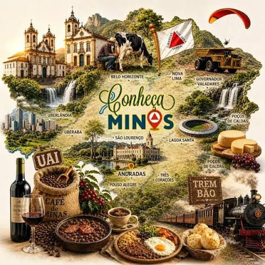

No final do século XVII, a descoberta de ouro e diamantes atraiu uma multidão para a região, dando origem às cidades históricas e ao barroco mineiro, até que a opressão dos impostos coloniais provocou a Inconfidência Mineira em 1789, transformando Tiradentes no maior mártir da liberdade do país. Séculos depois, a economia se transformou com o café, consolidando o grande poder político do estado na República Velha e exigindo a modernização que culminou na transferência da capital para a planejada Belo Horizonte em 1897. Por fim, em meados do século XX, o estado adaptou-se novamente aos novos tempos, tornando-se uma potência nacional na extração de minério de ferro e no desenvolvimento industrial.
